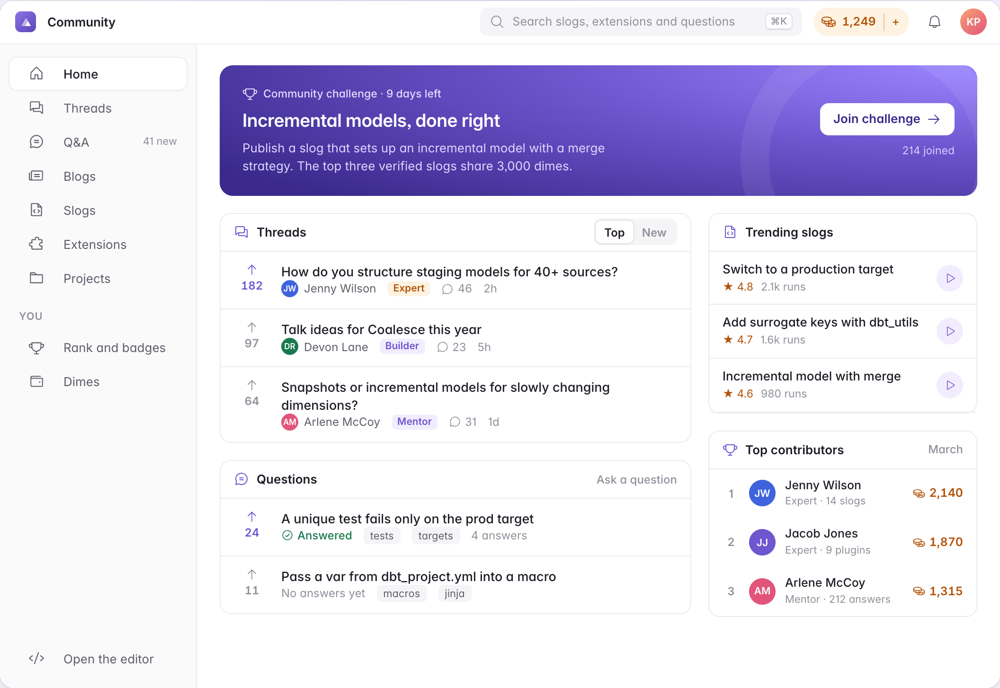

Brief
Online sales grew fast during the pandemic. Retailers chose speed and low cost over carbon, and supply chain emissions rose.
Blue Yonder asked for a five-year plan, backed by data, to move FMCG and e-commerce companies towards a carbon-neutral supply chain without losing efficiency, in line with India’s COP26 targets.
Net zero emissions
Lower emissions intensity by 2030, from 2005 levels
Less projected CO₂ between 2021 and 2030
India’s COP26 targets, from its national statement in Glasgow, November 2021. Source: Columbia Center on Global Energy Policy. Added for this page.
Scale
The world emits about 35 billion tonnes of CO₂ a year. China, the United States and India together emit just over half of it.
35,000million tonnes
- China11,68033%
- United States4,53513%
- India2,4127%
- Rest of the world16,37347%
Each square is 1% of the world’s emissions. Hover a country.
of gross merchandise value is lost to cancellations and returns
of plastic waste is produced in India each year
Four domains
We split the supply chain into warehousing, transportation, returns and packaging, and mapped the stages in each. A change in one domain shows up in the others.
Problems
Nine problems across warehousing, packaging and transport. We read each one four ways: its impact, its cost, its carbon and what it means for the customer.
Nine problems
Switch the lens to read the same nine problems another way.
Warehousing
Lack of digitisation
As operations grow, data errors lower productivity.
Paper-based processes raise overhead by up to 35%.
Physical documents emit twice as much as digital records.
Customers want timely updates, and only digital channels can give them.
Lack of automation
Manual tasks take longer and create backlogs in loading and packing.
Most warehouses need some automation, which can cut workflow emissions by up to 45%.
Human errors stack up into more returns and slowdowns, and more emissions per product.
Automated tasks damage less and send fewer wrong products.
Poor use of storage
Without real-time data, operations lose at least 10% of their efficiency.
Poor inventory management can waste up to 75% in energy, labour and other costs.
About 23% more emissions from wasted energy.
Better use of storage shortens the time between picking and dispatch.
Packaging
Single-use plastic
Its carbon footprint is low, but it leaches into the ground and water.
Cheap to pack with, but only 9% of it is recycled.
Single-use plastics cause 40% of plastic pollution each year.
Not covered in the report.
Packaging design
Packs are made to be thrown away, not reused.
Current packing materials are very cheap.
Each pack emits little, but the volume adds up.
Packs are hard to open and reuse, though customers prefer to reuse them.
No circular alternatives
Over 80% of plastic packaging can be recycled, yet over 90% of it is burned or sent to landfill.
Recycling needs high upfront capital, so other circular methods are worth finding.
Burning PVC, HDPE and LDPE releases toxic gases such as dioxins.
Reuse extends the life of packaging and saves energy.
Transport
Unoptimised last-mile routes
Deliveries fail on routes that are already inefficient.
The last mile is 53% of total shipping cost.
Trial-and-error routing during the online sales surge raised emissions by 25%.
Shorter delivery times keep customers.
Unused truck space
Less-than-truckload shipping needs more resources to keep packages safe.
Low space use can raise transport charges by up to 33%.
Without full loads, each product sold carries more carbon.
Not covered in the report.
Last-mile pickups
Pickup speed comes before carbon efficiency.
Drivers make several trips to keep customers happy and limit lost value.
Reverse logistics add emissions.
92% of customers stay after a good returns experience.
Priorities
We ranked the problems by impact and solved the biggest ones. Five solutions cover all nine problems, and most problems get more than one.
Hover a problem or a solution.
9 problems, 5 solutions
Five solutions
Each solution came with impact metrics and a check of its strategic fit: feasibility, adaptability, flexibility, sustainability, impact on the market and ease of integration.
Last mile optimisation
Drivers cover extra miles and wait at doors, and many deliveries fail because nobody is home at the time.
Customers pick a delivery slot when they order. A WhatsApp message the day before lets them confirm, change the slot or collect from the dispatch centre. Routing software then re-plans each day’s routes around their answers, roadblocks and traffic.
less carbon
lower costs
higher net profit
of cancellations at the doorstep avoided
Pick how the customer replies.
- Delivered
- Nobody home
- Collects at dispatch
- Moved to tomorrow
- Later slot
Strategic fit
- Feasibility
- App changes for customers and drivers, routing in the cloud and WhatsApp in the backend.
- Adaptability
- Drivers learn live changes to drop-offs. Some customers may find the reminder annoying.
- Flexibility
- Digital, so it holds up in a pandemic. In a loss year, companies may cut spending on it.
- Sustainability
- The software needs regular updates, at a cost.
- Impact on market
- More deliveries a day, informed customers, and less spent on fuel and labour.
- Ease of integration
- Changes the delivery software that 3PLs already use. Needs internet on the road.
Warehouse and inventory automation
Manual work slows goods down until they pile up. Picking alone is more than 55% of labour cost, and wrong picks add more.
A warehouse management system plans storage and picking from storage capacity, stock levels, supplier lead times, seasonal trends and upcoming campaigns.
less carbon than manual management
cost saving from forecast demand
better use of labour
accuracy in picking and labelling
Hover a function.
Six functions turn the inputs into warehouse tasks.
Ten items, from the dock and back.
Strategic fit
- Feasibility
- IoT devices, cloud storage and training for staff.
- Adaptability
- Staff reskill for the new system and learn its performance rates.
- Flexibility
- May not pay off for small businesses, and needs reconfiguring if the business model changes.
- Sustainability
- The carbon saving grows with demand.
- Impact on market
- Fewer wrong products, better availability and real-time data on buying trends. It needs fewer staff, which can mean layoffs.
- Ease of integration
- Connects to transport and packaging, and works with the machinery already in the warehouse.
Sustainable tertiary packaging
Wooden pallets take 14.43% of the space in a truck. They are heavy and bulky, and that adds to the cost of every trip.
Slip sheets of recycled cardboard replace them. A slip sheet is a sixteenth of a pallet’s thickness, so the space goes back to cartons, and loading and unloading take half the time. Stretch film gives way to recyclable PLA film.
less carbon, from better fuel efficiency
lower cost, a slip sheet against a pallet
lower transport cost
more cartons per trip
Swap the pallets for slip sheets.
- 1Push-pull forkliftsAn attachment grips the sheet’s lip and pulls the load on. It fits any forklift.
- 2One week of trainingForklift operators learn the new attachment in a week.
- 3Wider aislesAisles need to be 6–7 inches wider for the modified forklifts.
- 4Pallets keptPallets taken out of trucks are reused for storage in warehouses.
Strategic fit
- Feasibility
- Push-pull attachments for forklifts, and training to use them.
- Adaptability
- Operators adapt in a week. Warehouse staff learn to handle slip sheets.
- Flexibility
- Moisture damages fibreboard, as heavy sanitising did during COVID. Slip sheets are cheap, so a financial crisis doesn’t stop them.
- Sustainability
- Made from repurposed cardboard, so supply is not a constraint.
- Impact on market
- More stock per trip and faster loading mean more stock for sale and more orders completed.
- Ease of integration
- Cartons stack on a slip sheet as they do on a pallet. Reused pallets in storage need extra safety checks.
Convertible delivery bag
Packaging goes straight to landfill or is burned. There is no loop that brings it back.
At the fulfilment centre the product goes into a plastic bag, inside a compressible, recyclable cardboard box. The box protects it as far as the dispatch centre, then rides back for several more trips before it is recycled. The customer gets the bag, which turns inside out into a reusable handbag.
less carbon per delivery
higher packaging cost
for bags returned to the delivery person
Click to turn it inside out.
Delivered
- Cardboard box
- Bag
Boxes loop between the fulfilment and dispatch centres on trucks that would return empty. Bags go home with the customer. Fragile products get an extra layer of padding.
Strategic fit
- Feasibility
- Design and production of the new bags, and teaching customers how the system works.
- Adaptability
- Workers pack each product twice and separate the bag at dispatch. Drivers collect returned bags.
- Flexibility
- In a financial crunch, companies may not pay for the extra layer of packaging.
- Sustainability
- Regular R&D keeps lowering the cost and moving to better materials.
- Impact on market
- Customers get a durable, good-looking bag and Green Points for returning it.
- Ease of integration
- Boxes go back on trucks returning to the fulfilment centre. Unpacking has to keep them reusable.
Systematic waste management
Deadstock, returns and waste are not handled well. Deadstock averages 20% in FMCG, and adds 16 million tonnes of CO₂ a year in India.
Each product category gets its own disposition. HDPE and LDPE plastic from returns and deadstock goes to the government to build roads, in exchange for tradable carbon credits.
of carbon credits per km of road
of plastic waste per km of road
the life of a conventional road
Pick a category.
km of road
tonnes of carbon credits
Once laid, the road’s materials can’t be separated again. The first rain can start leaching, and the plastic forms a sticky layer.
Strategic fit
- Feasibility
- Transport to collect the waste and take it to government centres, and paid sorting.
- Adaptability
- Transport moves from landfill runs to government centres. The government needs room for the plastic.
- Flexibility
- Protective equipment in an environmental crisis. In a political crisis, priority roads are remade with plastic first.
- Sustainability
- Roads last longer, but the plastic in them can’t be recovered.
- Impact on market
- Cheaper roads, tradable credits for the company, and consumers notice.
- Ease of integration
- Uses collection runs and sorting the company already pays for.
Plan
The five solutions roll out over five years. Software changes go first, and the new packaging and waste programmes follow.
Timeline
Last-mile changes and warehouse automation start in the first year, while the delivery bag is in R&D. Tertiary packaging follows in year two and waste management in year three.
Drag across the years.
Rollout
Tertiary packaging and automation reach warehouses by grade, the largest first. The delivery bag rolls out by product type, by volume.
Hover a bar.
Year 1 is each solution’s first year of rollout.
Impact
Every metric from the report, by solution. Each one is measured against its own baseline, so they don’t add up.
| Solution | Carbon | Cost | Other |
|---|---|---|---|
| 1Last mile optimisation | 20–25% less | 17% saved | 26% more net profit, no cancellations at the door |
| 2Warehouse and inventory automation | 2× less than manual | 30% saved from forecast demand | 35% better labour use, 99%+ picking accuracy |
| 3Sustainable tertiary packaging | 20% less | 88.33% lower than pallets, 15% lower transport | 17% more cartons per trip, loading in half the time |
| 4Convertible delivery bag | 21% less per delivery | 10–20% higher | Boxes reused for several trips, bags reused at home |
| 5Systematic waste management | 3.5 t credits per km of road | Collection and sorting | Roads last 3× longer |
Outcome
We analysed each stage of the supply chain, ranked its problems by impact and solved the biggest ones. The plan moves the whole chain towards carbon efficiency, with the break-even point of each solution checked and the added cost kept low.
